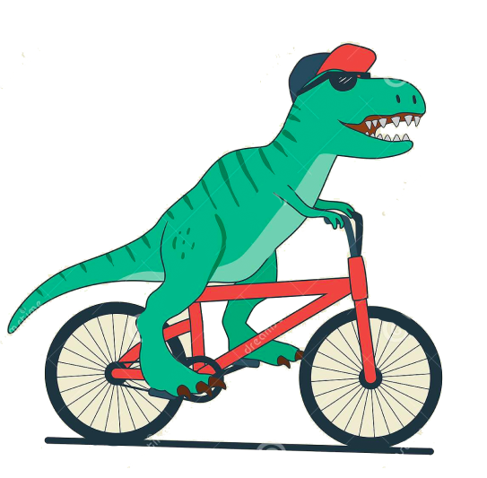

Веломастерская “Велозар”
Мы, мастера веломастерской «Велозар», как раз те самые счастливые люди, которые смогли превратить свое увлечение и хобби в профессию. Мы сами любим кататься и хотим чтобы Ваш двухколесный друг приносил Вам только радость и удовольствие от езды.
